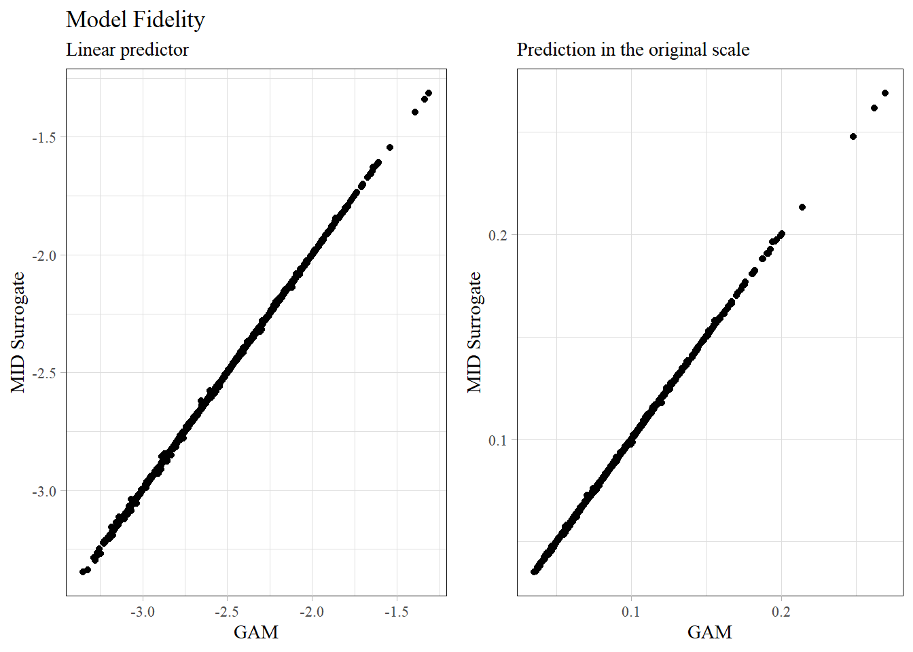

In actuarial practice, balancing predictive performance with model interpretability is a constant challenge. While Generalized Additive Models (GAMs) offer inherent transparency, complex black-box models like Gradient Boosting Models (GBMs) often provide superior accuracy at the cost of clarity.
This notebook demonstrates Maximum Interpretation Decomposition (MID) using the {midr} package in R. MID serves as a surrogate modeling framework that decomposes complex predictions into interpretable components—main effects and interactions—allowing us to open the black box without sacrificing the predictive power of it.
Code
# data manipurationlibrary(arrow)library(dplyr)# predictive modelinglibrary(gam)library(lightgbm)# surrogate modelinglibrary(midr)library(midnight)# visualizationlibrary(ggplot2)library(gridExtra)# load training and testin datasetstrain <-read_parquet("../data/train.parquet")test <-read_parquet("../data/test.parquet")# cold executionCOLD_RUN <-TRUEif (COLD_RUN) {set.seed(42) train <- train[sample(nrow(train), 50000), ] test <- test[sample(nrow(test), 50000), ]}
We begin by fitting a standard GAM to the motor insurance frequency dataset. Since a GAM is already composed of additive smooth functions, it serves as a perfect sanity check for our surrogate modeling approach.
Call:
interpret(formula = Frequency ~ VehPower + VehAge + DrivAge +
LogDensity + VehBrand + VehGas + Region, data = train, model = fit_gam,
weights = Exposure, link = "log")
Link: log
Uninterpreted Variation Ratio:
working response
0.00017046 0.00011598
Working Residuals:
Min 1Q Median 3Q Max
-0.0338466 -0.0008416 -0.0000489 0.0007905 0.0327146
Encoding:
main.effect
VehPower linear(9)
VehAge linear(18)
DrivAge linear(25)
LogDensity linear(25)
VehBrand factor(6)
VehGas factor(2)
Region factor(7)
Model Fidelity
After wrapping the GAM with the interpret() function, we evaluate the Model Fidelity. In the MID framework, the (Working) Uninterpreted Variation Ratio (\(1 - R^s\)) quantifies how much of the original model’s logic remains “unexplained.” As shown in the scatter plots, the MID surrogate almost perfectly replicates the GAM’s predictions on the test set, both on the linear predictor and the original response scale.
Code
theme_set(theme_midr("xy"))pred_mid_gam =predict(mid_gam, test, type ="response")set.seed(42)plot_idx <-sample(nrow(test), 2000L)p <-ggplot(data.frame(fit = pred_fit_gam[plot_idx],mid = pred_mid_gam[plot_idx]))grid.arrange(nrow =1, p +geom_point(aes(log(fit), log(mid))) +labs(x ="GAM", y ="MID Surrogate",title ="Model Fidelity", subtitle ="Linear predictor"), p +geom_point(aes(fit, mid)) +labs(x ="GAM", y ="MID Surrogate",title ="", subtitle ="Prediction in the original scale"))

Main Effect
A critical step in validating a surrogate model is ensuring that the extracted functional forms (main effects) align with the underlying model’s logic. In the case of a GAM, where effects are explicitly modeled as splines, the MID surrogate should ideally recover these shapes with high fidelity.
Next, we train a LightGBM model. While more powerful, its tree-based structure makes it difficult to explain the relationship between inputs and outputs directly.
We apply MID to the LightGBM model, specifically allowing for second-order interactions (^ 2) in the formula. This allows the surrogate to capture joint effects that a simple additive model would miss.
A key strength of {midr} is its ability to isolate and visualize interaction effects:
Interaction Plots: We can visualize specific interactions, such as LogDensity:Region, using ggmid(). This helps identify whether certain geographical regions react differently to population density.
Perspective Plots: The persp() function provides a 3D view of these interactions, offering a more intuitive understanding of non-linear surfaces. This S3 method is implemented in {midnight}.